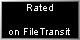
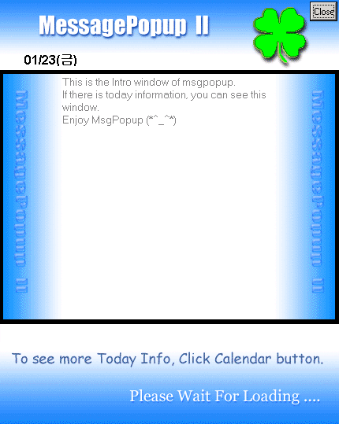
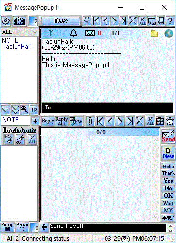
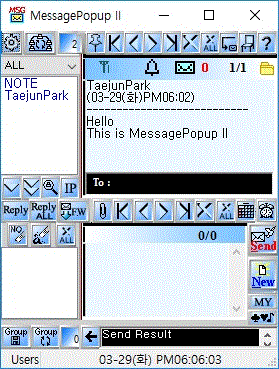
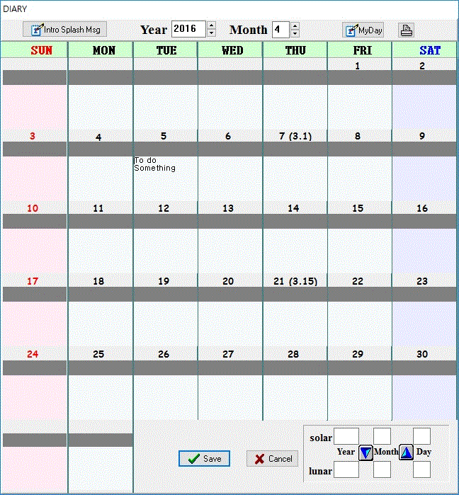

MessagePopup II (MsgPopup II) [Freeware] ( Since 10/24/2001)
The Newest version is 4.0.2
Instant LAN Messanger. Simple and fast and stable. But, It's for free of charge.
Can you believe this!.
(In other site,that version may not be the newest version, please download msgpopup here )
Anyone can use MessagePopupII anywhere ( home/company/public office)
Of course, you can use MessagePopupII in commercial company for free of charge
But cannot use it for selling MessagePopupII.
Message Popup II is FREEWARE program for LAN Message Communication .
(
Even though It is free, I am waiting for your donation.
If you think this program is deserved as just 1$, It is OK.
I will thank for it.
Then this program will remain Freeware, forever.
)
Useful for a small office network. It will help your work.
This Lan Messanger is faster and lower network load than messanger using Windows Network or IPX .
It uses IP, so it gives much reliability .(can check sending fail or success)
It is because MessagePopup II only uses IP for communication.
So, If you want to use this , just need your own IP.
Can communicate with only installation.
Interface is not menu interface but button interface. It is for that anybody can use it easily. Click Click !!
Has Diary. Can memorize all records of days in a computer.
Has Alarm. Let you know alarm time at the time that you reserved.
Can synchronize computer time with internet timeserver.
So, you can use this program depend on your purpose. Just Try it on your LAN!.

[Requirements]
OS: Windows 95/98/Me/2000/XP/Vista/8/10
LAN card : TCP/IP protocol installed ( Need static IP, Not dynamic IP. If dynamic, set DHCP server )
Display : At least 800 X 600, (over 1024 X 768 recommended)
Thank you for using my program.
If you have any questions or find bugs, feel free to leave a message In Q&A EN_board 
Or send me a  .
.
Good Luck !
For more information, visit MessagePopupII HTML Help
[Main Icon] For other download sites

[Intro Splash window]

[Main window]

[Small Size]

[Icon Window]
If you don't want popup when a message is received, right click the system tray icon,
and select [Icon Window] . When receive a new message, that Icon window is blinking.

[Diary]
Can make your own diary depend on your country holiday and your days( birthday, and memorial days .. ). Just click Myday button.
Can write diary on each day. Just click day button and write it.
